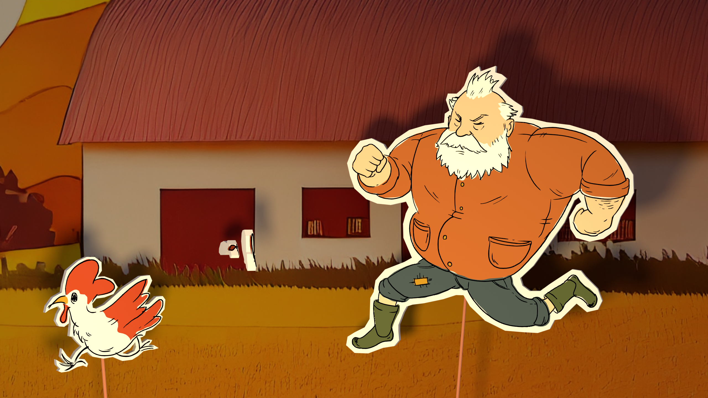

Volleyball Body Mechanics
An exercise in body mechanics animating the movement of a volleyball player performing a spike.
The goal is not only to better understand the anatomical connections between the body parts in movement but also to explore the beauty of 3D animation.
The animation was fully developed in Maya.
Barney & the Chicken
Intrigued by the dynamic evolution of the storyteller-audience relationship, I developed the concept of “Barney & the Chicken,” using these characters to symbolize my discoveries.
I situated them within the framework of a travelling puppet show.
The characters manifest in three distinct forms within the animation: initially as a sign on top of the structure, next as cardboard puppets, and finally as the puppeteers themselves.
This deliberate choice serves to underscore the fluid boundary between narrator and audience, reflecting my intermediary role within these two realms.
My fascination with the interplay between 3D and 2D led me to create the animation both in Blender and Procreate Dreams.
